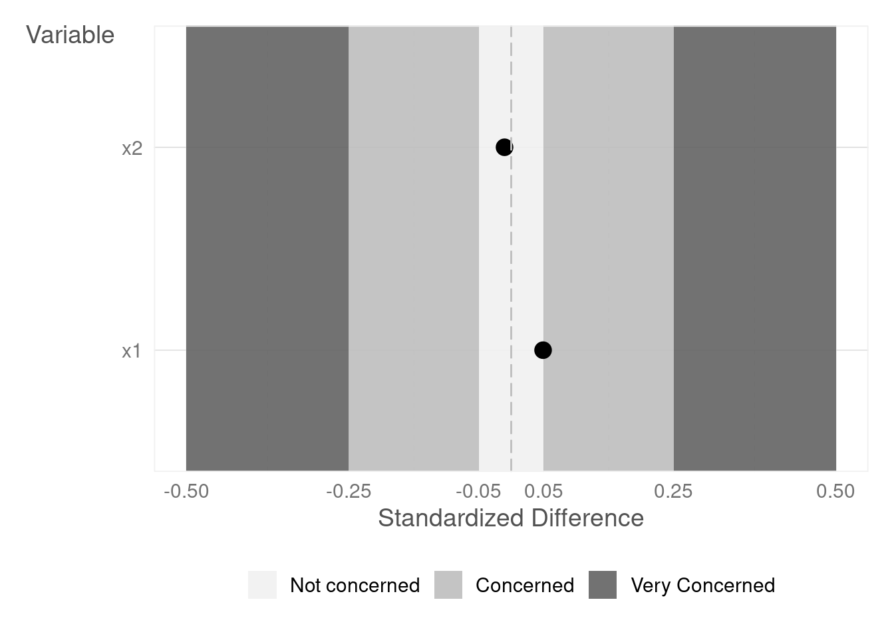

{kind=link}
set.seed(941998)
N <- 10000 # Our synthetic dataset comprises 10,000 observations
fake_data <- tibble::tibble(
x1 = rnorm(n = N, mean = 5000, sd = 500),
e1 = rnorm(n = N, mean = 7000, sd = 900),
t = sample(
x = c(TRUE, FALSE),
size = N,
replace = TRUE,
prob = c(0.5, 0.5)
)
)7 The Power of Randomization
It is crucial to recognize that randomization isn’t magic. When a sufficiently large population is randomly divided into two groups, these groups will be remarkably similar in both observable and unobservable characteristics. By assigning one group to a treatment and leaving the other as a control, any difference in the outcome of interest can be confidently attributed to the treatment. As we discussed in Chapter 1, causal inference can be conceptualized as a missing data problem. In a randomized experiment, this problem is simplified because we effectively have data missing at random, allowing us to make unbiased estimates of causal effects.
The Importance of SUTVA: The Cornerstone of Valid Inference
However, it’s crucial to remember that the success of both RCTs and A/B tests hinges on a fundamental assumption: the Stable Unit Treatment Value Assumption (SUTVA). SUTVA has two main components:
No Interference (or No Spillover): The treatment applied to one unit should not affect the outcome of another unit. This means that the outcome for any unit is unaffected by the treatments received by other units.
Treatment Variation Irrelevance (or Consistency): The potential outcome of a unit under a specific treatment should be the same regardless of how that treatment is assigned. This implies that if a unit receives a particular treatment, the outcome should only depend on that treatment, not on how or why it was assigned.
In simpler terms, SUTVA ensures that the effect of the treatment is solely due to the treatment itself and not influenced by other factors or interactions between units.
SUTVA Violations: When the Ideal Meets Reality
While SUTVA is often assumed, it can be easily violated:
Network Effects: Consider an A/B test of a new social media feature. If users in the treatment group interact with users in the control group, the feature’s impact might spread beyond the intended group, violating SUTVA.
Market Competition: Testing a new pricing strategy might trigger competitor reactions, indirectly affecting the outcome even for users not exposed to the new price.
Spillover Effects: In advertising, a targeted campaign for one product might unintentionally increase awareness or sales of related products.
Mitigating SUTVA Violations
Sometimes, the solution to a SUTVA violation can be as simple as changing the unit of randomization. For instance, running geo-experiments in geographically isolated markets can minimize interaction between groups. In other cases, solutions require more intricate study designs. When complete elimination isn’t feasible, it’s crucial to acknowledge and mitigate the potential impact of SUTVA violations on your conclusions.
Key Takeaway:
Understanding and addressing SUTVA is essential for designing experiments and drawing valid conclusions. By carefully considering the potential for interference and inconsistency, researchers and practitioners can design more robust experiments and make more informed decisions based on their findings.
Learn more
- Chernozhukov et al. (2024) Applied causal inference powered by ML and AI.
Baseline equivalence and Sample Size Considerations
Baseline equivalence is a critical, particularly in experiments with a small sample size or observational studies. It refers to the similarity of groups (e.g., treatment and control groups) on key characteristics before an intervention or treatment is introduced. Without baseline equivalence, observed differences in outcomes could be due to pre-existing differences between the groups, rather than the intervention itself. For instance, if a company is testing a new algorithm to increase user engagement on their platform, and the treatment group (those exposed to the new algorithm) already had higher baseline engagement levels than the control group, any observed increase in engagement in the treatment group might be due to their pre-existing behavior, not necessarily the new algorithm.
The Risk of Small Sample Sizes
It’s important to emphasize that achieving baseline equivalence is particularly challenging with small sample sizes. As Wainer (2007) points out in “The Most Dangerous Equation,” small samples are inherently more variable, making it more likely that random chance will lead to imbalances between groups, even with randomization. This can lead to the erroneous conclusion that an effect exists when it truly doesn’t (a Type I error), or vice-versa (a Type II error). Therefore, in smaller experiments, careful attention to baseline equivalence and potential statistical adjustments are paramount.
Establishing Baseline Equivalence
In RCTs, random assignment of participants to treatment and control groups should warranty baseline equivalence as long as the group is large enough. However, even in large RCTs, factors like attrition (loss of participants) or reassignment (participants switching groups) can compromise baseline equivalence. In such cases, you will need employ statistical techniques to adjust for any remaining differences between the groups.
In non-randomized studies (quasi-experimental designs), establishing baseline equivalence is more challenging. You can use techniques to match treated units to units that are untreated but look similar in observable characteristics. However, it’s important to note that these methods cannot guarantee equivalence on unobserved characteristics, which could still bias the results.
Assessing Baseline Equivalence
To assess baseline equivalence, we can examine pre-intervention outcomes and other relevant observable characteristics. A common approach is to calculate the effect size, defined as the difference in means between the treatment and control groups divided by the pooled standard deviation.
It is generally accepted that if the absolute value of the effect size is greater than 0.25, baseline equivalence is not established, and statistical adjustments are unlikely to adequately correct for the differences. When the absolute value of the effect size falls between 0.05 and 0.25, statistical adjustments are necessary to achieve baseline equivalence. An absolute value less than 0.05 indicates strong evidence of baseline equivalence.
Learn more
- WWC (2020) What Works Clearinghouse Baseline Equivalence Standard.
An example using code
Let’s delve into the concept of baseline equivalence with synthetic data. Suppose we’re analyzing a population of 10,000 individuals, each characterized by two traits: x1, observable to us, and e1, which remains hidden. Given the large sample size, if we randomly split this population into two groups, we can expect these groups to be statistically similar. Let’s see this in action:
We can examine the mean values for the two groups:
means <- fake_data |>
dplyr::group_by(t) |>
dplyr::summarise(mean_x1 = mean(x1),
mean_e1 = mean(e1))
# Calculate the differences between means for x1 and e1
mean_diff_x1 <- means$mean_x1[2] - means$mean_x1[1]
mean_diff_e1 <- means$mean_e1[2] - means$mean_e1[1]
cat("Difference in mean_x1 between t = TRUE and t = FALSE:", mean_diff_x1, "\n")Difference in mean_x1 between t = TRUE and t = FALSE: -0.4563229 cat("Difference in mean_e1 between t = TRUE and t = FALSE:", mean_diff_e1, "\n")Difference in mean_e1 between t = TRUE and t = FALSE: -3.910241 However, simply observing the difference in means might not provide a clear picture of the magnitude. Let’s assess the effect size:
pooled_sd_x1 <- sd(fake_data$x1)
pooled_sd_e1 <- sd(fake_data$e1)
abs_effect_size_x1 <- abs(mean_diff_x1 / pooled_sd_x1)
abs_effect_size_e1 <- abs(mean_diff_e1 / pooled_sd_e1)
cat("Absolute value of the effect size for x1 is:", abs_effect_size_x1, "\n")Absolute value of the effect size for x1 is: 0.0009064671 cat("Absolute value of the effect size for e1 is:", abs_effect_size_e1, "\n")Absolute value of the effect size for e1 is: 0.00434118 Here, we can observe that despite randomization, the two groups are statistically identical. However, what if our sample size is much smaller?
set.seed(941998)
N <- 10 # Our synthetic dataset comprises 10 observations
fake_data2 <- tibble::tibble(
x1 = rnorm(n = N, mean = 5000, sd = 500),
e1 = rnorm(n = N, mean = 7000, sd = 900),
t = sample(
x = c(TRUE, FALSE),
size = N,
replace = TRUE,
prob = c(0.5, 0.5)
)
)
means <- fake_data2 |>
dplyr::group_by(t) |>
dplyr::summarise(mean_x1 = mean(x1),
mean_e1 = mean(e1))
# Calculate the differences between means for x1 and e1
mean_diff_x1 <- means$mean_x1[2] - means$mean_x1[1]
mean_diff_e1 <- means$mean_e1[2] - means$mean_e1[1]
pooled_sd_x1 <- sd(fake_data2$x1)
pooled_sd_e1 <- sd(fake_data2$e1)
abs_effect_size_x1 <- abs(mean_diff_x1 / pooled_sd_x1)
abs_effect_size_e1 <- abs(mean_diff_e1 / pooled_sd_e1)
cat("Absolute value of the effect size for x1 is:", abs_effect_size_x1, "\n")Absolute value of the effect size for x1 is: 0.3726052 cat("Absolute value of the effect size for e1 is:", abs_effect_size_e1, "\n")Absolute value of the effect size for e1 is: 1.276676 With a smaller sample size, we see significant differences between the two groups, even with randomization. The disparity in the unobservable characteristic (e1) is particularly large. If we were to compare outcomes for these groups, which are influenced by this unobservable characteristic, we might mistakenly attribute any differences to the intervention being studied.
The {im} package
The {im} package provides a convenient way to check baseline equivalence using the im::checkBaseline function and visualize the results with im::balancePlot.
balance <-
im::checkBaseline(data = fake_data,
variables = c("x1", "e1"),
treatment = "t")
balance# A tibble: 2 × 3
variables std_diff balance
<chr> <dbl> <fct>
1 x1 -0.000906 Not Concerned
2 e1 -0.00434 Not Concernedim::balancePlot(data = balance)You can also randomize data using im::randomize. This function iteratively re-randomizes until achieving a specified level of baseline equivalence or reaching a maximum number of attempts.
my_data <- tibble::tibble(
x1 = rnorm(10000),
x2 = rnorm(10000)
)
# Randomize
randomized <- im::randomizer$new(
data = my_data,
seed = 12345,
max_attempts = 1000,
variables = c("x1", "x2"),
standard = "Not Concerned"
)
# Get Randomized Data
randomized$data# A tibble: 10,000 × 3
x1 x2 treated
<dbl> <dbl> <lgl>
1 -0.206 -1.06 TRUE
2 -0.559 1.66 TRUE
3 0.465 1.25 TRUE
4 0.400 0.808 TRUE
5 -0.964 -0.290 FALSE
6 0.642 -0.741 FALSE
7 0.632 -0.0584 FALSE
8 -1.27 -0.767 TRUE
9 -0.945 0.355 TRUE
10 -1.13 0.332 TRUE
# ℹ 9,990 more rows# Get Balance Summary
randomized$balance_summary# A tibble: 2 × 3
variables std_diff balance
<chr> <dbl> <fct>
1 x1 -0.000358 Not Concerned
2 x2 -0.0161 Not Concerned# Generate Balance Plot
randomized$balance_plot
7.1 Stratified Randomization
While random assignment is effective, unforeseen factors can sometimes lead to imbalanced groups. Stratified randomization addresses this by dividing users into subgroups (strata) based on relevant characteristics that are believed to influence the outcome metric. Randomization is then performed within each stratum, ensuring that both treatment and control groups have a similar proportion of users from each subgroup.
This approach strengthens experiments by creating balanced groups. For instance, if user location is expected to affect the outcome metric, users can be stratified by location (e.g., urban vs. rural), followed by randomization within each location. This ensures a similar distribution of user attributes across treatment and control groups, controlling for confounding factors—user traits that impact both exposure to the new feature and the desired outcome. With balanced groups, any observed differences in the outcome metric are more likely due to the new feature itself, leading to more precise and reliable results.
Examples
Targeting Mobile App Engagement: In an RCT to evaluate a new in-app notification, user location (urban vs. rural) is suspected to influence user response. Stratification by location, followed by randomization within each stratum, can control for this factor.
Personalizing a Recommendation Engine: When A/B testing a revamped recommendation engine, past purchase history is hypothesized to influence user response. Stratification by purchase history categories (e.g., frequent buyers of clothing vs. electronics), followed by randomization within each category, can account for this.
Advantages:
Reduced bias: Stratification helps isolate the true effect of the new feature by controlling for the influence of confounding factors. This leads to more reliable conclusions about the feature’s impact on user behavior.
Improved decision-making: By pinpointing the feature’s effect on specific user groups (e.g., urban vs. rural in the notification example), stratified randomization can inform decisions about targeted rollouts or further iterations based on subgroup performance.
Disadvantages:
Increased complexity: Designing and implementing stratified randomization requires careful planning to choose the right stratification factors and ensure enough users within each stratum for valid analysis.
Need for larger sample sizes: Maintaining balance across strata might necessitate a larger overall sample size compared to simple random assignment.
Example with code
Let’s illustrate the concept of stratified randomization with a practical example. Consider a scenario where we have data on 10,000 individuals, each described by two continuous variables (x1 and x2) and two categorical variables (x3 and x4). We suspect that variable x3 might be a confounding factor influencing the outcome of our experiment.
my_data <- tibble::tibble(
x1 = rnorm(10000),
x2 = rnorm(10000),
x3 = rep(c("A", "B"), 5000),
x4 = rep(c("C", "D"), 5000)
)
# Create a Randomizer Object
randomized <- im::randomizer$new(
data = my_data,
seed = 12345,
max_attempts = 1000,
variables = c("x1", "x2"),
standard = "Not Concerned",
group_by = "x3"
)
# Generate Balance Plot
randomized$balance_plot
In this code, we’re using the im::randomizer function to create an object that will help us perform stratified randomization. We specify x3 as the variable to stratify by, ensuring that the treatment and control groups have a balanced distribution of individuals from both categories of x3.
By incorporating stratified randomization into our experimental design, we can effectively control for the influence of variable x3, enhancing the internal validity of our study and allowing for more precise estimates of causal effects.
In conclusion, stratified randomization offers a powerful way to enhance the rigor and precision of experiments, particularly when dealing with potential confounding factors. While it may introduce some additional complexity and potentially require larger sample sizes, the benefits in terms of internal validity and the ability to draw more nuanced conclusions often outweigh these drawbacks. The thoughtful use of stratified randomization can be a valuable asset in the causal inference toolkit.